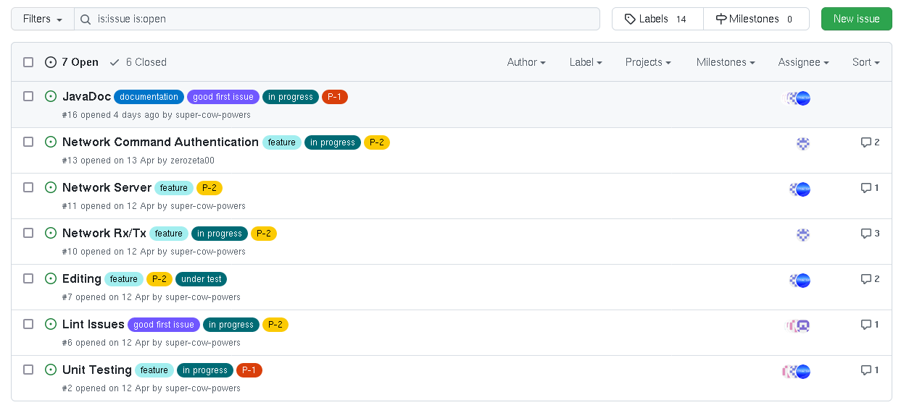
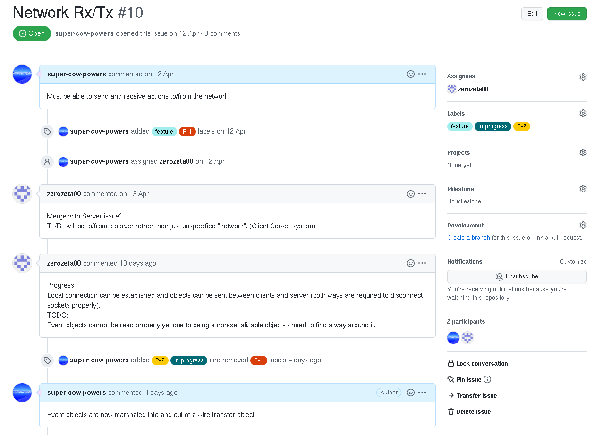

This page contains assorted other documents, which we found difficult to categorise.
Having used GitLab's issues tracker previously at my placement company as a large, effective, part of their project-management and progress tracking workflow,
it was decided that the GitHub equivalent should be applied to this Project. Required work should be added to the tracker with an assignee, who should then look at and begin the work.
Questions can be asked and problems solved using the discussion for each issue, and progress and priority can be indicated using tags which gives a quick visual overview of progress being made - this allows for rapid iteration and for changes to be made as they arise from the discussion, helping us follow Agile Principals.
The following were split from previously closed trackers
A sample piece of work might look like the following, with the relevant tags and discussion on progress and technique.
